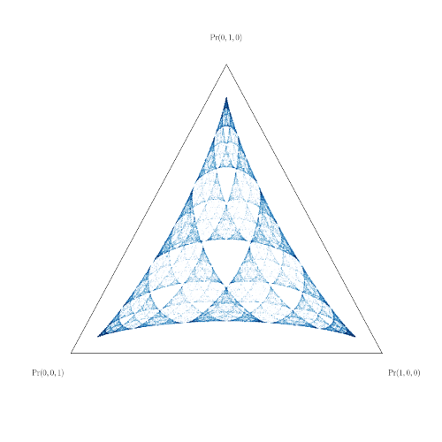

I am physicist and mathematician working on optimal prediction, computation
in the natural world, and information theory. I am currently ISFP
(Inria Starting Faculty Position) at Inria Bordeaux, a computer science
research laboratory located in Bordeaux, France. This position is a
permanent researcher position.
Interested in working with me?
I am currently working on setting up a research group COMCAUSA with my
colleague Nicolas Brodu. If you
are interested in collaboration, or if you are a prospective graduate
student or post-doc looking for a position, please send me an email. The
simplest positions available right now for graduate-level students are four to six month
internships.

A fractal I studied during my PhD work --- actually the latent
space of optimally predictive states of a stochastic process.
I did my PhD in Physics at the University of California,
Davis, where I studied chaos in stochastic processes and picked up my
penchant for biking. Before my PhD, I attended Marietta College from 2011 to
2015, where I earned a BS in Physics and a BS in Math. During my
undergraduate years I was lucky to be mentored by Dr. Cavendish McKay, who
introduced me to the study of chaotic systems. For this, I cannot thank him
enough. Prior to this introduction, I was focused on optics: as an
undergraduate I spent one summer at the ENS Cachan Quantum and Molecular
Photonics Laboratory (LPQM) in Paris through the Optics in the City of
Light iREU at the University of Michigan, and another at the Linac Coherent Light Source
(LSLC) through the Department of Energy SULI program.
Although I have been lucky to live and travel around the world, I was raised
in the San Francisco Bay Area. My pronouns are she/her.